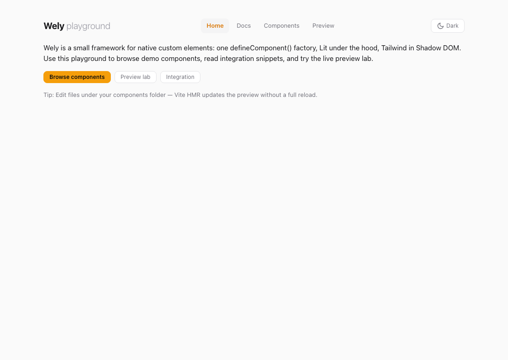
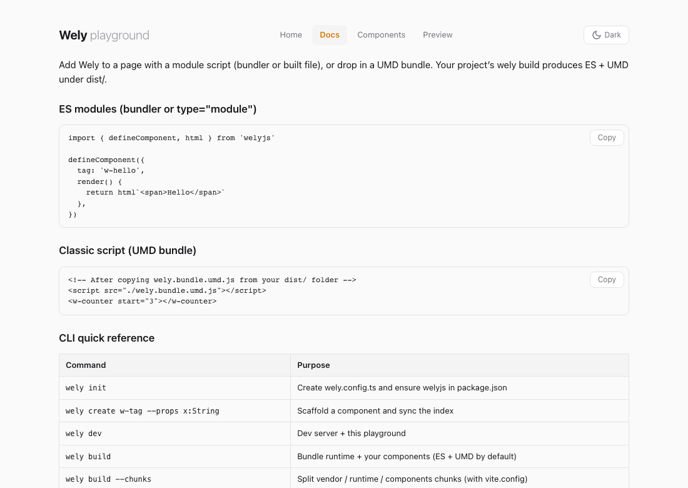
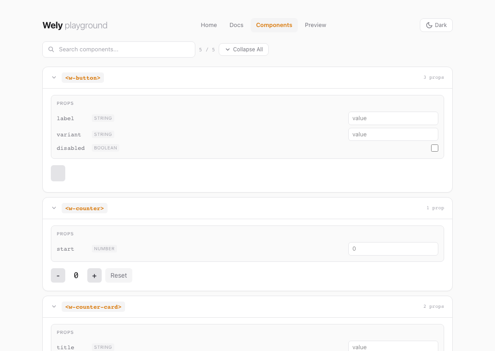
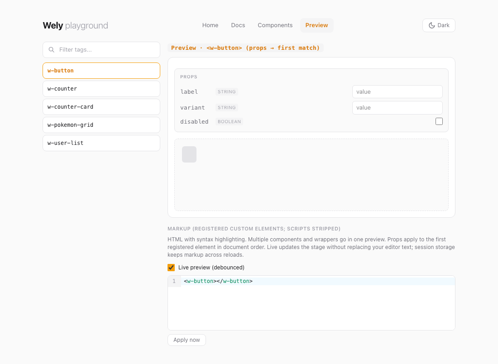

Lightweight Web Component framework — one defineComponent(), no class syntax, no framework lock-in.
Wely core powers rendering internally and is never exposed. Developers interact exclusively through the Wely API. Output is native custom elements — fully portable, they run in plain HTML, React, Vue, Angular, Svelte, anywhere.
Single-page documentation.
This site is one static HTML file: jump with the nav or read top to bottom. Run wely page from the project root; if docs/index.html is missing, the CLI creates a minimal shell once. The PokéAPI demo below uses the bundle published to docs/assets/wely.bundle.umd.js — existing doc HTML is never overwritten.
Building frontend components today typically means choosing a heavy framework and wiring up a dozen tools. Wely replaces that with a single unified toolkit.
| Step | What you do | What Wely handles |
|---|---|---|
| Configure | wely setup or wely init → wely.config.ts, package.json (wely dev / wely build, ^welyjs, autoComponents) | Centralized config via ctx.config |
| Diagnose | wely doctor | Node, welyjs, componentsDir, dist, config checks with fix hints |
| Create | wely create w-card --props title:String --test | Scaffolds component file and barrel index |
| Develop | wely dev | Hot-reloading playground; auto-discovers components when wely.autoComponents is on |
| Style | Use Tailwind classes in templates | Compiled and injected into Shadow DOM |
| Fetch | createClient({ baseURL }) | HTTP client with interceptors, timeout |
| State | ctx.resource() / ctx.use(store) | Async resources + shared stores |
| Test | wely test · wely test --changed · wely ci | Vitest + jsdom; bundled default config when no local vitest.config / vite.config |
| Build | wely build | ES + UMD bundles; auto-discovers components from componentsDir by default |
| Embed | wely embed · wely add react|vue | Plain HTML scaffold and framework integration snippets |
| Export | wely export ../other-project/lib | Copies output to any folder |
| Document | wely docs · wely docs --watch | Generates COMPONENTS.md |
One CLI, one config file — from scaffolding to production.
Wely produces minimal bundles. Runtime includes the Wely core renderer, API utilities (defineComponent, store, resource, fetch), and Tailwind CSS. All sizes are minified + gzipped.
| Build | Size (min+gzip) |
|---|---|
Runtime only (wely.es.js) | 13 KB |
| 1 component (w-button) | 13.3 KB |
| 2 components (+ w-counter) | 13.6 KB |
| 3 components (+ w-counter-card) | 14 KB |
| 5 components (+ w-pokemon-grid, w-user-list) | 15 KB |
Per-component overhead: ~0.4–0.5 KB for simple components.
Pay for what you use — Wely bundles only what you import. Add one component → ~13 KB. Add five → ~15 KB. No framework runtime at the consumer; output is native Web Components. Tree-shaking keeps the bundle minimal: unused components never land in the final file.
Fastest path (new project): one command scaffolds config, installs deps, adds a sample component + test, and runs the first build.
mkdir my-app && cd my-app
wely setup # init + install + w-demo component + build
wely dev # playground (or: npm run dev)
wely doctor # verify setupManual (step by step): Only wely.config.ts + welyjs — no vite.config, no extra deps.
mkdir my-app && cd my-app
wely init # package.json + wely.config + autoComponents + components/
npm install
wely create w-hello --props msg:String --test
wely build # auto-discovers components → dist/wely.bundle.*.js
wely dev # playground (or: npm run dev — same scripts after init)Full repo (Wely development):
npm install
npm run dev # playground at localhost:5173
npm run build # library → dist/wely.es.js + dist/wely.umd.js
npm run test
npm run test:runOne-command setup, diagnosis, embed, and CI — all through the Wely CLI.
wely setup # scaffold + install + sample component + build
wely doctor # diagnose setup (wely doctor --json for CI)
wely build # respects wely.autoComponents in package.json
wely build --no-auto-components
wely embed # → html-usage/index.html (plain HTML usage)
wely add react # integrations/react-example.tsx
wely add vue # integrations/vue-example.vue
wely test --changed # only tests for git-changed components
wely docs --watch # regenerate COMPONENTS.md on save
wely ci # build + test + docs + dist verifypackage.json → wely config:
{
"wely": {
"componentsDir": "src/wely-components",
"autoComponents": true,
"componentExclude": ["**/*.stories.ts"]
}
}When autoComponents is true (default after wely init), wely build and wely dev discover *.ts files under componentsDir — no manual src/bundle.ts import chain required.
wely embed scaffolds a page with defer on the bundle and wely.ready(tag) for safe boot. Use the same pattern when dropping a UMD bundle into any static page:
<script src="dist/wely.bundle.umd.js" defer></script>
<w-hello msg="World"></w-hello>
<script>
wely.ready('w-hello').then(function () {
// DOM parsed, component defined and upgraded
});
</script>Dynamic load: import { loadScript } from 'welyjs' then await loadScript('/dist/wely.bundle.umd.js').
Typical loop for an app that lives in its own folder: scaffold → add or edit components → use the playground for quick feedback → build artifacts for production or static hosting.
1 · Bootstrap
wely setup or wely init → npm install
Creates wely.config.ts, package.json (wely.autoComponents: true), src/bundle.ts, src/wely-components/. Run wely doctor to verify.
2 · Components
wely create <tag> or edit *.ts under your components folder
With autoComponents, new files are picked up automatically — no manual index.ts imports required
3 · Try in the playground
wely dev (no local vite.config)
Gallery lists all registered components · Preview lab: HTML editor (highlighted), live preview, optional session restore · Hash routes #/gallery, #/preview?tag=…
4 · Build & ship
wely build → dist/ bundle (and library modes when a vite.config exists)
wely embed for plain HTML · wely export <path> copies artifacts · wely page updates docs/assets/wely.bundle.umd.js · wely ci for local pipeline
Loop back from step 3 anytime: change components, save, HMR updates the playground. Step 4 is when you need a distributable bundle or a deployable folder.
┌──────────────┐ ┌──────────────┐ ┌─────────────────────────┐
│ wely setup │ ──► │ wely doctor │ ──► │ Edit / wely create tags │
│ (or init) │ │ │ └───────────┬─────────────┘
└──────────────┘ └──────────────┘ │
▼
┌──────────────┐ ┌──────────────┐ ┌─────────────────────────┐
│ wely embed │ ◄── │ wely build │ ◄── │ wely dev → playground │
│ wely export │ │ → dist/ │ │ Gallery · Preview lab │
│ wely ci │ └──────────────┘ └─────────────────────────┘
wely page: demo bundle → docs/assets/wely.bundle.umd.js (single-page site)
wely test)Install vitest and jsdom as devDependencies (wely init adds them and a test script). wely test runs Vitest in watch mode; wely test --run runs once; wely test --changed focuses on git-changed component tests.
For a full local pipeline, run wely ci — build + test + docs generation + dist verification (wely ci --json for machine-readable output).
Import test primitives from welyjs/test (describe, it, expect, …) plus helpers like getComponentContext and withHost — single source of truth with Vitest under the hood.
If the project has no vitest.config.* and no vite.config.*, the CLI passes the published welyjs/vitest-consumer config so Vitest does not accidentally load a vite.config from a parent directory. Default globs: src/**/*.test.ts, src/**/*.spec.ts; environment jsdom; passWithNoTests: true. Add your own config when you need aliases, coverage, or different roots.
wely dev starts a Vite dev server with hot reload. On first run (when no vite.config exists), the CLI uses the bundled vite.dev.config.ts: the published index.html shell and a virtual entry that imports your wely.config, dev CSS, then your components (via glob auto-discovery when wely.autoComponents is on, or src/bundle.ts when off), then mountApp(). If you already have a vite.config, plain vite runs instead.
The UI is a single page with client-side routing via location.hash — no extra HTML files. Default route is #/home.
| Route | Purpose |
|---|---|
#/home | Intro, shortcuts to other views |
#/docs | Copy-paste ES module & UMD snippets, CLI cheat sheet |
#/gallery | All components in searchable cards with live props |
#/preview · #/preview?tag=w-button | Preview lab: HTML editor with syntax highlighting (CodeMirror), Live preview (debounced) without overwriting your markup, one sandbox for multiple tags, props for the first registered element in document order, sessionStorage for snippet / filter. Apply now syncs the URL. |
Captured from the Wely repo playground (npm run dev). Regenerate with npm run docs:playground-ss (runs scripts/capture-playground-screenshots.mjs).



Below: Preview with w-button selected. Two columns — tag filter + list; main pane has title, Props (edits push into the markup field), dashed stage, then markup textarea with Live preview so typing updates the preview after a short delay. You can wrap tags in extra HTML; the first matching registered custom element is used. Apply now applies immediately and syncs the hash. Narrow viewports may wrap the top nav.

Wely repo (full checkout): index.html + src/playground/* + src/styles/tailwind.css — npm run dev uses the same entry as below.
Consumer app (only wely init files, no vite.config): the CLI ships the shell HTML and a virtual entry that imports your wely.config.ts, generated dev CSS, welyjs/playground/app, and your components — you do not copy src/playground/ into your repo.
| Artifact | Purpose |
|---|---|
index.html (from welyjs package) | Shell with #app; inline playground chrome styles |
virtual:wely-playground | Entry: config → dev CSS → mountApp() after dynamic import of components |
virtual:wely-components | When autoComponents: glob-imports componentsDir/**/*.ts (excludes tests, index). When off: imports src/bundle.ts |
src/playground/app.ts | Navigation, routes, views — resolved via welyjs/playground/app alias |
Auto-rendering: getAllComponents() lists every registered component. New components from wely create show up immediately (HMR) when auto-discovery is enabled.
Interactive props: In the gallery (and preview lab), props get live inputs; attributes update the element and trigger re-renders.
Consumer projects without vite.config: vite.dev.config.ts serves the same HTML shell from the published index.html and a virtual entry that imports welyjs/playground/app after your config and components — same UX as the repo.
Every component is a plain object passed to defineComponent():
import { defineComponent, html } from 'welyjs'
defineComponent({
tag: 'w-counter',
props: { start: Number },
state() { return { count: 0 } },
setup(ctx) { ctx.state.count = ctx.props.start ?? 0 },
actions: {
increment(ctx) { ctx.state.count++ },
decrement(ctx) { ctx.state.count-- },
reset(ctx) { ctx.state.count = ctx.props.start ?? 0 },
},
render(ctx) {
return html`
<button @click=${ctx.actions.decrement}>-</button>
<span>${ctx.state.count}</span>
<button @click=${ctx.actions.increment}>+</button>
<button @click=${ctx.actions.reset}>Reset</button>
`
},
})Use it: <w-counter start="5"></w-counter>
Wely components are native Custom Elements — nest them by using the tag name:
render(ctx) {
return html`
<div class="border rounded-lg p-4">
<h3>${ctx.props.title}</h3>
<w-counter start=${ctx.props.start ?? 0}></w-counter>
<w-button label="Action" @w-click=${ctx.actions.onClick}></w-button>
</div>
`
}ctx.emit('event-name', payload))createStore() + ctx.use(store))Fetching data with ctx.resource(). Data from PokéAPI.
Registers a native custom element. Fields: tag, props, devInfo, styles, state(), actions, setup(ctx), render(ctx), connected(ctx), disconnected(ctx). Actions receive (ctx, event?) — with @input, @click, etc., event.target gives the element.
| Property | Description |
|---|---|
ctx.el | Host HTMLElement |
ctx.props | Readonly attribute-synced properties |
ctx.state | Auto-reactive state (mutations trigger re-render) |
ctx.actions | Bound action map — handlers receive (ctx, event); event.target for the element |
ctx.update() | Manually request re-render |
ctx.emit(event, payload?) | Dispatch CustomEvent |
ctx.resource(fetcher, opts?) | Async resource bound to lifecycle |
ctx.use(store) | Subscribe to shared store |
ctx.config | Read-only config from wely.config.ts |
Zero-dependency HTTP client (native fetch). Axios-like: get, post, put, patch, delete, onRequest, onResponse, onError. Interceptors, timeout, query params, JSON.
Async data primitive. Use via ctx.resource(). Tracks data, loading, error. Methods: fetch(), refetch(), abort(), mutate(), reset().
Shared reactive state. state: () => ({...}), actions: { name(state, ...args) {...} }. Use ctx.use(store) to subscribe.
Define in wely.config.ts with defineConfig(). Read with getConfig(), useConfig(key), or ctx.config. Supports import.meta.env.VITE_*.
html, css, nothing
When enabled (default), each component gets data-wely-version and data-wely-mounted attributes — visible in browser DevTools. Version comes from defineConfig({ version: '1.0.0' }) or per-component override.
// Default: attributes added
defineComponent({ tag: 'w-card', render: () => html`...` })
// Disable
defineComponent({ tag: 'w-secret', devInfo: false, render: () => html`...` })
// Override version per component
defineComponent({ tag: 'w-card', devInfo: { version: '2.0.0' }, render: () => html`...` })Set version in wely.config.ts for global devInfo version.
Override the default src/wely-components via package.json:
{
"wely": {
"componentsDir": "src/components",
"autoComponents": true,
"componentExclude": ["**/*.stories.ts"]
}
}autoComponents enables glob discovery on build and dev. componentExclude adds extra glob patterns to skip. Used by create, sync, list, docs, build, dev.
Override the default dist output directory via package.json:
{
"wely": { "componentsDir": "src/components", "outDir": "build" }
}Used by build, export, page. Both the library config and CLI respect this value.
Runs in the current directory. Use wely --help, wely -v, and wely help <command> for subcommands. New projects: wely setup (fastest) or wely init → npm install → wely create → wely build. Errors show what happened, how to fix, and a one-line command.
# One-shot setup
wely setup # init + install + sample component + build
wely setup --no-build # skip initial build
wely doctor # diagnose setup
wely doctor --json # machine-readable output
# Setup (manual)
wely init # wely.config.ts + package.json + autoComponents + components/
npm install
# Components
wely create w-card --props title:String --test
wely create w-user --props name:String,age:Number --actions refresh,delete
wely sync
wely list
wely docs
wely docs --watch # regenerate on component changes
wely docs --out docs/api.md
# Build (minimal project: bundle by default; auto-discovers components)
wely build
wely build --no-auto-components
wely build --bundle
wely build --chunks # runtime/components split when needed
wely build --all
wely build --json # machine-readable summary
wely build --export ../app/public/vendor/wely
# Embed & integrations
wely embed # html-usage/index.html
wely add react
wely add vue
# Deploy
wely export ../other-project/lib
wely export ./out --no-build
wely export ../lib --clean
# Dev & test
wely dev
wely test # watch — vitest + jsdom (wely init adds them)
wely test --run # single run
wely test --changed # git-changed component tests only
wely ci # build + test + docs pipeline
wely ci --json
# GitHub Pages
wely page # docs/assets/wely.bundle.umd.js (keeps docs/index.html)| Command | Output | Use case |
|---|---|---|
wely build (no vite.config) | wely.bundle.*.js | Consumer project — runtime + auto-discovered components |
wely build --no-auto-components | wely.bundle.*.js | Uses src/bundle.ts import chain instead of glob |
wely build --chunks | wely.chunked.es.js (+ optional chunks/*.js) | Runtime/components split — cache-friendly |
wely build (with vite.config) | wely.es.js, wely.umd.js | Library — runtime only (packaging) |
Bundle: drop-in script. Library: import { defineComponent, html } from 'welyjs'.
Chunked build: wely build --chunks separates stable runtime/core code from component code when chunking is beneficial. Use <script type="module" src="wely.chunked.es.js"></script>. If a chunks/ folder is generated, deploy it with the entry file.
Size optimization: Default uses esbuild minify. For smaller bundles, use a custom vite.config with minify: 'terser' and terserOptions: { compress: { drop_console: true } } — terser yields ~5–15% smaller output.
Tailwind CSS v4 is integrated:
tailwind.css normallystyles: css`:host { ... }`Minimal setup: wely init + wely build — CLI creates tailwind.css with correct @source on first run. Bundle consumers: no config — Tailwind baked in.
Every mounted Wely component exposes its context on the DOM element as $wely. This enables direct access from DevTools, tests, or automation tools (e.g. MCP-based agents).
const el = document.querySelector('w-counter')
el.$wely.state.count // read state
el.$wely.state.count = 10 // write state (triggers re-render)
el.$wely.actions.increment() // call an action
el.$wely.props.start // read props
el.$wely.emit('my-event', { detail: 42 }) // dispatch eventwindow.welyInstalled automatically when the runtime loads:
wely.get('w-counter') // first matching element's ctx
wely.getAll('w-counter') // all matching elements' ctx array
wely.list() // all registered tag names
wely.ready('w-counter') // Promise: DOM ready + tag defined/upgraded
wely.whenReady(fn, 'w-counter') // callback form| Method | Returns | Description |
|---|---|---|
wely.get(selector) | ComponentContext | undefined | Context of the first element matching the tag or CSS selector |
wely.getAll(selector) | ComponentContext[] | Contexts of all matching elements |
wely.list() | string[] | All registered component tag names |
wely.ready(tag?) | Promise<void> | DOM parsed + custom element(s) defined — safe after defer or dynamic script load |
wely.whenReady(fn, tag?) | void | Callback form of ready |
TypeScript: $wely is typed on HTMLElement globally. The WelyBridge interface is exported for window.wely typing.
MCP / automation: Because window.wely is plain JS, any browser automation tool (Playwright, Puppeteer, Cursor browser MCP) can call window.wely.get('w-counter').state via evaluate() to read or mutate component state programmatically.
| Browser | Minimum |
|---|---|
| Chrome | 73+ |
| Edge | 79+ |
| Firefox | 101+ |
| Safari | 16.4+ |
Custom Elements v1, Shadow DOM, adoptedStyleSheets, Proxy
Wely components are fully portable — build once, use anywhere. They are standard Web Components; no framework runtime at the consumer side.
| Aspect | Behavior |
|---|---|
| Output | Custom Elements v1, Shadow DOM — no framework-specific bundle |
| Consumer runtime | Zero Wely runtime — components are plain DOM elements |
| Drop-in | Plain HTML, React, Vue, Angular, Svelte, Astro, Eleventy, any DOM environment |
| Formats | ES module + UMD — bundlers or classic <script> |
| Deployment | wely export <path> copies output · wely embed scaffolds plain HTML usage |
| Integrations | wely add react · wely add vue — starter snippets in integrations/ |
Same component, same API — works in all environments without modification.
defineComponent() call, no classesactions pattern separates logic from templates| Layer | Tool |
|---|---|
| Language | TypeScript |
| Rendering | Wely core renderer (internal) |
| Styling | Tailwind CSS v4 |
| Dev / Build | Vite |
| Testing | Vitest + jsdom |
| Output | ES module + UMD |
src/
runtime/ defineComponent, config, registry, fetch, resource, store
components/ w-counter, w-button, w-counter-card, w-pokemon-grid, w-user-list
styles/ tailwind.css
playground/ main.ts, app.ts, home, docs, gallery, preview-lab
index.html Playground shell
wely.config.ts App config
vite.config.ts Vite + Vitest
docs/index.html GitHub Pages single-page doc (wely page → docs/assets/wely.bundle.umd.js only)